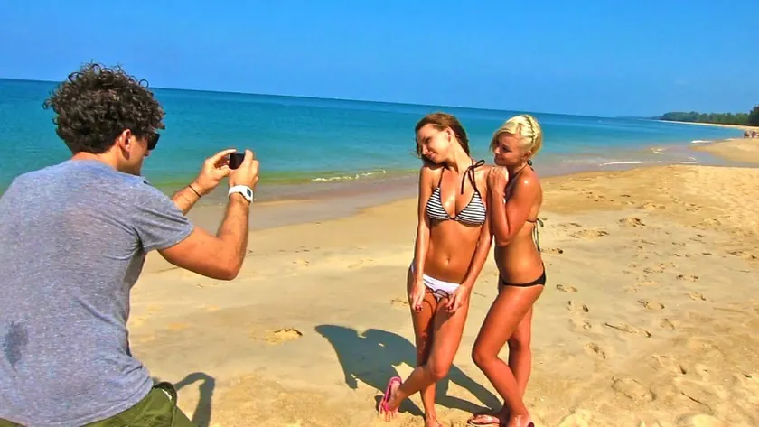
Nike × Casey Neistat / 2012
Make It Count
The film Neistat made instead of the advert, from his own channel. Count how often the product appears.
The partnership archive / Edition 06 / Platform first

“The audience used to come to the brand. Now the brand has to go and find it.”
Edition 05 showed what happens when a partner’s reputation breaks. This edition moves to the people and platforms that now hold the audience: creators, streamers and games. For each one I ask who owned the audience, and who got to keep it.
15 case studies / 2012 to 2022
Opening story / Dunkin’ and Charli D’Amelio / 2020
TikTok’s biggest star already drank Dunkin’ cold brew. Dunkin’ named her order ‘The Charli’, and app downloads jumped 57% on launch day.
01 / The finding
In this edition the audience belongs to someone else: a creator, a streamer or a game. The partnerships that worked went where that audience already was. Dunkin’ put Charli D’Amelio’s own order on the menu, McDonald’s Japan put its restaurants inside Pokémon Go, and Lil Nas X played to Roblox players in their own world.
The ones that struggled tried to move or stretch an audience. Microsoft paid Ninja to bring his viewers to Mixer, and many didn’t follow. Prime and MrBeast Burger turned audiences into customers, then found that keeping them depended on the product.
Reach is easy to find here and harder to judge. Views, streams and resale prices are everywhere. Four cases have sales or download figures, and none has a modelled effect.
Modelled effectSales or value trendReach only or archival
02 / The patterns
Platform for audience leads: six of fifteen. A game or service lends its users, and a partner gives them a reason to show up. Choose one to filter the archive.
One side lends a story or character the other could not create.
A designer or artist brings taste, and a big brand brings reach.
One side makes something worth watching, and the other gets it seen.
A platform lends its users, and a partner brings a reason to show up.
A cultural figure lends authenticity, and a brand takes it to a mass audience.
03 / The screening room
Four films from the partners’ own channels. Notice how little any of them looks like an advert.

Nike × Casey Neistat / 2012
The film Neistat made instead of the advert, from his own channel. Count how often the product appears.
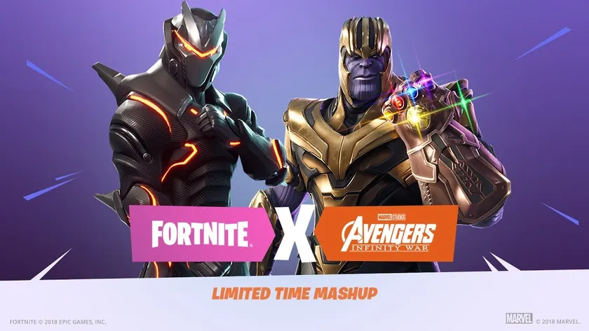
Fortnite × Marvel’s Avengers / 2018
Epic’s trailer for the Thanos mode, from Fortnite’s channel. The film is advertised by being played.
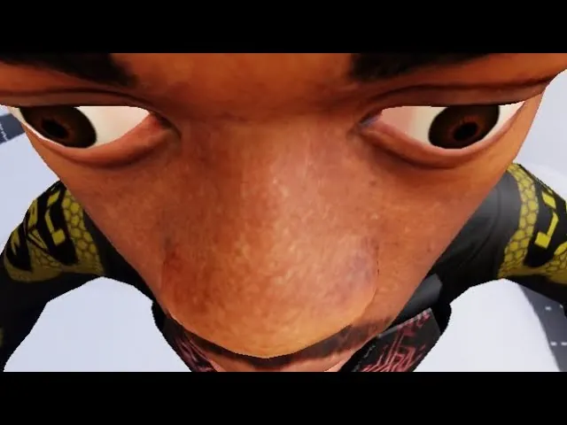
Roblox × Lil Nas X / 2020
The whole concert, from Lil Nas X’s channel. Notice the audience is never shown, because it was inside the game.
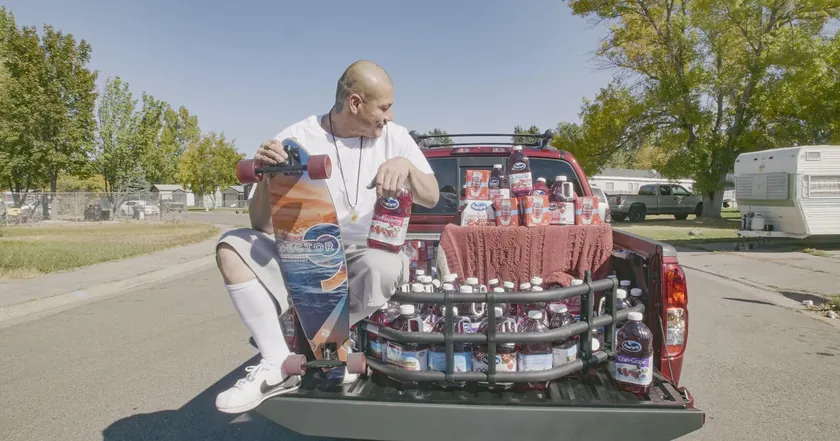
Ocean Spray × Nathan Apodaca / 2020
Ocean Spray’s thank you, from its own channel. The brand arrives after the culture, not before.
04 / The collection
See each partnership alongside what each side brought and what it achieved. Open each case for the film, my take and how it was measured.
Modelled effectSales trendSurveyReach only or archival
15 partnerships
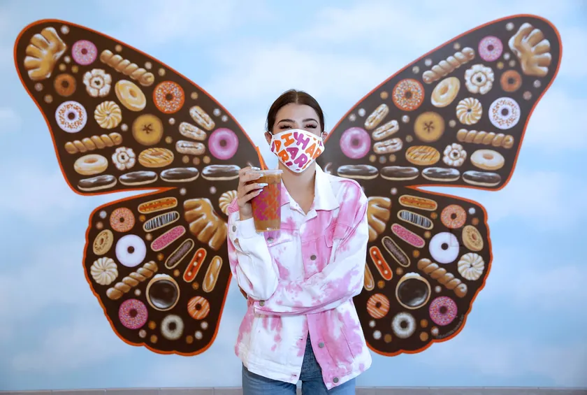
Dunkin’ × Charli D’Amelio / 2020 / Credibility for reachThe CharliTikTok’s biggest star already drank Dunkin’. So Dunkin’ put her order on the menu.Co-branded product · Launched and reported +57%Dunkin’ app downloads on launch dayDunkin’ and Charli D’Amelio, 2020
Charli D’Amelio was the most followed person on TikTok, and her fans had seen her with a Dunkin’ cup in her videos for months. Dunkin’ wanted younger customers, and more of them using its app.
Dunkin’ named her usual order, cold brew with whole milk and three pumps of caramel swirl, ‘The Charli’. She promoted it to her followers.
The Charli launched in September 2020. On launch day Dunkin’ app downloads jumped 57% on the previous 90-day average, and the company later said it had sold hundreds of thousands of the drink in five days.
Nobody had to pretend. Charli already ordered it, so the partnership just put a name on her cup.
Image: The Charli · Dunkin’ campaign artwork via Ads of the World
The figures come from Dunkin’ itself and weren’t independently audited. They are unusually direct, because the drink was only sold under her name.
The best creator partnership starts with something the creator already does. Turn a real habit into a product, and the fans will order it.
Nike and Casey Neistat, 2012
Nike wanted a film about its FuelBand activity tracker and the line ‘Make it count’. Casey Neistat was a New York filmmaker with a growing YouTube following.
Nike paid for the film. Neistat ignored the brief and spent the budget on a ten-day trip around the world with his friend Max, filming as he went.
Released in 2012, the film showed the trip rather than the product, and Nike let it run. It was viewed more than 1.5 million times in three days.
The moment brands learned that the creator might know the audience better than the agency. Nike’s best decision was saying yes to something it hadn’t asked for.
Image: Make It Count (2012) · Casey Neistat’s film thumbnail
The views are well documented, and the film helped launch Neistat’s career as one of YouTube’s biggest creators. Nike published no figure for its effect on sales.
When you hire a creator for their voice, let them use it. The brief can kill what made them worth hiring.
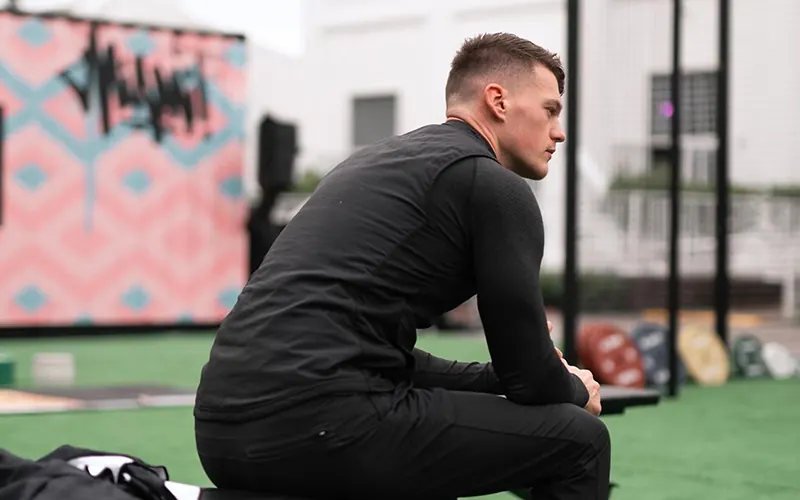
Gymshark × its first creators / 2012 / Credibility for reachBuilt on YouTubeA teenager’s gym clothes company grew by sending its products to YouTubers.Endorsement · Grew into a £1bn company £1bn+Gymshark’s valuation in 2020 · legacy factGymshark and its early creators, from 2012
Ben Francis started Gymshark in Birmingham in 2012, while delivering pizzas. It had no budget for advertising, but fitness YouTubers were becoming famous.
Gymshark sent its clothes to fitness creators such as Lex Griffin and Nikki Blackketter, who wore them in their videos. The creators got clothes, and later fees, and Gymshark got credibility with their audiences.
Gymshark built its brand on creator partnerships rather than advertising. In August 2020 General Atlantic bought a 21% stake, valuing the company at more than £1bn.
Gymshark didn’t buy influence. It was part of a community and grew up with it.
The valuation is documented, but it can’t be separated into what creators contributed. The early partnerships are told mostly by the founder.
Partner with creators before they’re famous, and grow together. Early belief buys loyalty that later money can’t.
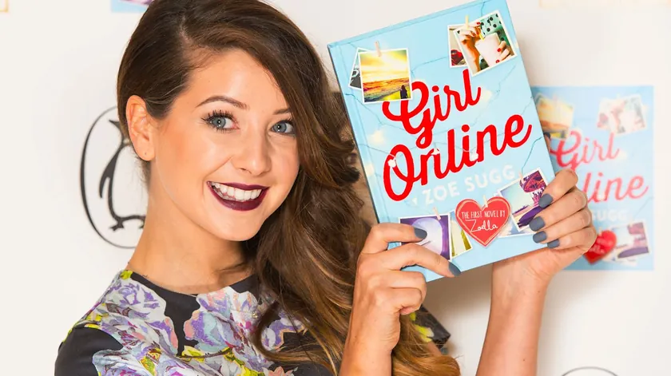
Penguin × Zoella / 2014 / Credibility for reachGirl OnlineA YouTuber’s first novel outsold every debut on record, and then the questions started.Co-branded product · Published and reported 78,109Copies sold in the first week, a debut recordPenguin and Zoe Sugg, 2014
Zoe Sugg, known as Zoella, was one of Britain’s biggest YouTubers, with millions of teenage followers. Penguin wanted to reach readers who watched more than they read.
Penguin published a young adult novel under her name. Zoella promoted it to her audience.
Girl Online sold 78,109 copies in its first week in November 2014, a record for a debut author. Days later Penguin confirmed she had not written it on her own, and that an editorial consultant had worked on it.
The sales proved the audience was real. The backlash proved it cared about authenticity more than publishers expected.
Book sales are independently tracked, which makes this one of the cleaner figures in the edition. The ghostwriting revelation led to a backlash, but the sales were already made.
Be honest about who did what. An audience that trusts a creator feels it most when the work isn’t what it seems.
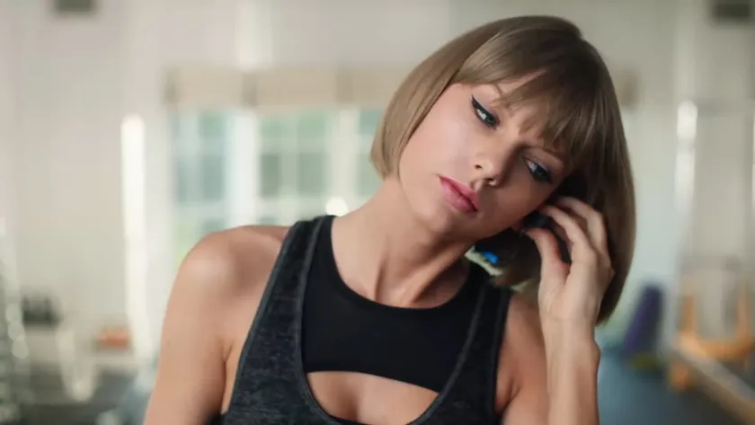
Apple Music × Taylor Swift / 2015 / LicenceTo Apple, Love TaylorOne open letter changed Apple’s policy overnight.Licence · Changed in a day 1 dayBetween the letter and Apple changing its policy · legacy factApple and Taylor Swift, 2015
Apple was about to launch Apple Music with a free three-month trial, during which it planned not to pay artists. Taylor Swift had the year’s biggest album, 1989.
Apple needed artists to license their music. Swift could give or withhold the most wanted album of the year.
On 21 June 2015 Swift posted an open letter saying she would hold back 1989 because artists weren’t paid during the trial. Within about a day, Apple’s Eddy Cue said Apple would pay artists during the trial.
The fastest negotiation in the archive, done in public. Swift showed that a creator can set the terms for a platform.
Image: Taylor vs. Treadmill (2016) · Apple Music campaign still from Kieran Walsh’s archive
The letter and Apple’s change are well documented. 1989 later came to Apple Music, and Swift went on to appear in its adverts, but neither side published what the partnership was worth.
On a platform, the partner with the content has power. Platforms need the work more than any single launch needs the platform.
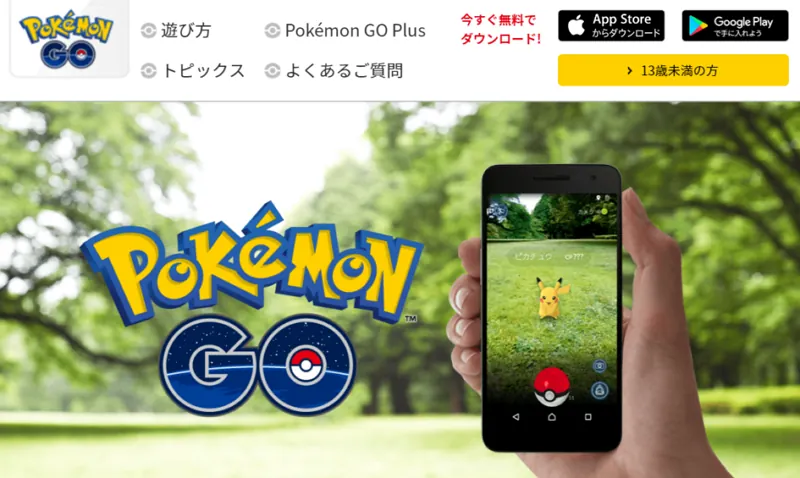
Pokémon Go × McDonald’s Japan / 2016 / Platform for audienceThe Restaurant as a GymA game sent players to real restaurants, and McDonald’s paid to be the destination.Sponsorship and placement · Launched and reported +27%McDonald’s Japan sales in July 2016Niantic, The Pokémon Company and McDonald’s Japan, 2016
Pokémon Go was the biggest mobile game of 2016, sending players to real places to catch Pokémon. It launched late in Japan, Pokémon’s home.
McDonald’s Japan paid to become the game’s first sponsor. About 3,000 restaurants became gyms or PokéStops, places players needed to visit.
The game launched in Japan on 22 July 2016 with McDonald’s inside it. Reports of the deal sent McDonald’s Japan’s shares up sharply, and July sales rose.
The first sponsored location in a game, and the purest version of the idea: the game sent people through the door.
The sales rise and the share price jump are reported, but McDonald’s Japan was also running Pokémon Happy Meal toys and recovering from a food safety crisis.
When a platform controls where people go, being on the map is worth paying for. Buy the location players need, not just the screen they see.
Epic Games and Marvel Studios, 2018
Fortnite had become a cultural phenomenon with millions of daily players. Marvel was releasing Avengers: Infinity War, its biggest film yet.
Marvel let Epic Games put Thanos and the Infinity Gauntlet into Fortnite. Fortnite gave the film a place where its audience already spent its time.
The Infinity Gauntlet mode launched on 8 May 2018. Whoever found the gauntlet became Thanos. It set a pattern for film, music and brand events inside Fortnite.
This is where games became media. A film didn’t just advertise in a game, it became part of it.
Image: Infinity Gauntlet Limited Time Mashup (2018) · Fortnite’s official trailer thumbnail
Neither side published what the event did for players or ticket sales. Its significance is what followed: concerts and crossovers became a regular part of Fortnite.
A game can be a stage for other brands. Fit the partner into how the game is played, not just how it looks.
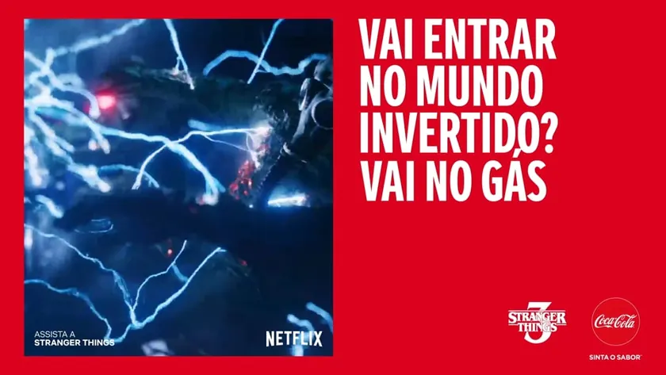
Coca-Cola × Stranger Things / 2019 / Content for reachNew Coke ReturnsCoca-Cola brought back its most famous mistake for a show set in 1985.Content partnership · Launched <500,000Cans of New Coke made for the launch · legacy factCoca-Cola and Netflix, 2019
The third season of Stranger Things was set in the summer of 1985, the year Coca-Cola launched New Coke and withdrew it after 79 days. The show’s creators suggested bringing it back.
Netflix put New Coke into the story. Coca-Cola made a limited run of the 1985 formula and promoted the season.
In May 2019 Coca-Cola announced it would make fewer than 500,000 cans of New Coke for the season, sold through pop-up machines, online and at its Atlanta museum.
Brand Turning Points told how New Coke failed in 1985. Thirty-four years later, a streaming show turned it into nostalgia.
Image: Portal (2019) · Coca-Cola and Stranger Things campaign artwork from Sailor Studio
The partnership and the limited run are documented. Neither company published sales or viewing effects.
A brand confident enough to joke about its failures can turn them into content. Let the partner tell the story you couldn’t.
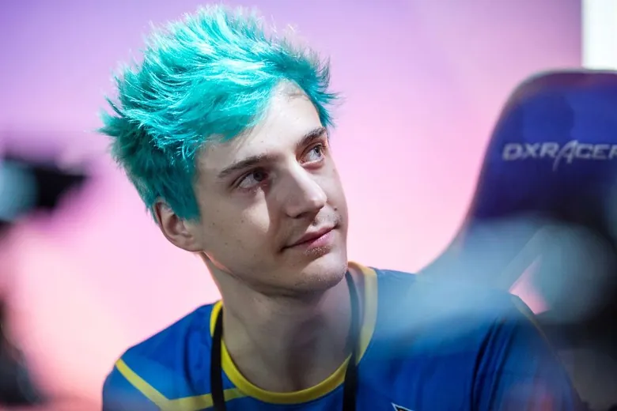
Mixer × Ninja / 2019 / Platform for audienceThe ExclusiveMicrosoft paid the world’s biggest streamer to move platforms. The platform closed within a year.Platform integration · Signed and ended by closure 11 monthsFrom Ninja’s move to the closure announcement · legacy factMicrosoft and Tyler Blevins, 2019 to 2020
Tyler Blevins, known as Ninja, was the most famous streamer on Twitch, with millions of followers watching him play Fortnite. Microsoft’s Mixer was a distant competitor.
Microsoft paid Ninja a reported $20m to $30m to stream only on Mixer. Ninja was expected to bring his audience with him.
Ninja moved in August 2019. Many of his viewers didn’t follow, and in June 2020 Microsoft announced it was closing Mixer. Ninja returned to Twitch.
The creator did well and the platform didn’t. Audiences are loyal to people, but they live on platforms.
The move, the reported fee and the closure are documented. Mixer’s viewing figures weren’t published in full, so how many fans followed him is unclear.
An audience follows habits, not just people. Paying a creator to move doesn’t move the people who watch them.
Ocean Spray and Nathan Apodaca, 2020
In September 2020 Nathan Apodaca’s car broke down, so he longboarded to work, drinking Ocean Spray and miming to Fleetwood Mac’s ‘Dreams’. He posted it on TikTok.
Apodaca made the most shared video of the moment, without being asked. Ocean Spray gave him a new truck filled with juice.
The video went viral within days. Ocean Spray surprised Apodaca with a cranberry red truck, Mick Fleetwood made his own version, and ‘Dreams’ had its biggest streaming week ever.
Ocean Spray didn’t write the brief, cast the star or pick the song. Its only job was to say thank you, and it did that well.
Image: Nathan Apodaca and his new truck (2020) · photograph via CBS News
The streams are tracked independently, but they belong to the band. Ocean Spray didn’t publish a sales effect.
Sometimes the partner finds you. When a customer makes something great with your product, reward them quickly and don’t try to own it.
Roblox, Lil Nas X and Columbia Records, 2020
During the pandemic, live concerts stopped. Lil Nas X had broken through on TikTok, and Roblox had tens of millions of young daily players.
Lil Nas X performed as a motion-captured avatar and premiered a new single. Roblox gave him an audience his age and a new way to perform.
Over the weekend of 14 and 15 November 2020, Lil Nas X performed four shows in Roblox, including the debut of ‘Holiday’.
A musician met fans in their own playground. The audience didn’t have to come to him.
Image: The Lil Nas X Roblox Concert (2020) · official video thumbnail
The views are a reach figure. Neither side published what the concert did for streams of the single or for Roblox.
Go where the audience already is, in a form that suits the place. A concert in a game should feel like part of the game.
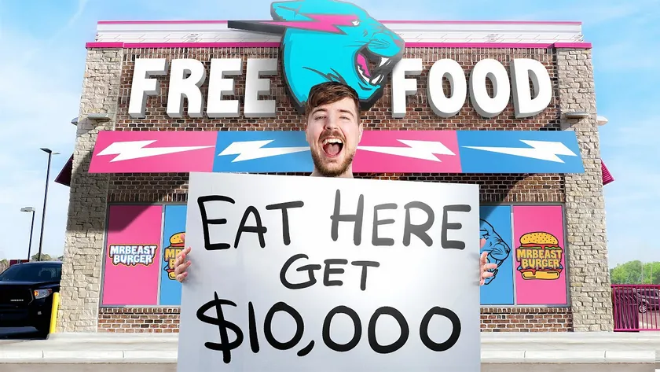
MrBeast × Virtual Dining Concepts / 2020 / LicenceMrBeast BurgerThe biggest YouTuber in the world opened hundreds of restaurants in a day, without building any.Licence · Launched, then fought in court 300Locations on launch day, as reported · legacy factMrBeast and Virtual Dining Concepts, 2020
Jimmy Donaldson, known as MrBeast, had one of YouTube’s largest audiences. Virtual Dining Concepts ran delivery-only brands cooked in existing restaurants’ kitchens.
MrBeast licensed his name and promoted the brand. Virtual Dining Concepts arranged for restaurants to cook and deliver the burgers.
MrBeast Burger launched in December 2020 with about 300 locations and grew quickly. In 2023 MrBeast sued to end the deal, saying the food quality damaged his reputation. Virtual Dining Concepts sued him back.
The audience turned up. The burgers didn’t always live up to the name, and that hurt the creator more than the kitchen.
Image: MrBeast Burger launch (2020) · MrBeast’s video thumbnail
The launch and the lawsuits are on the record. Sales were never published, and the dispute was about quality, not demand.
If your name is the product, control the quality. A licence can scale faster than you can check it.
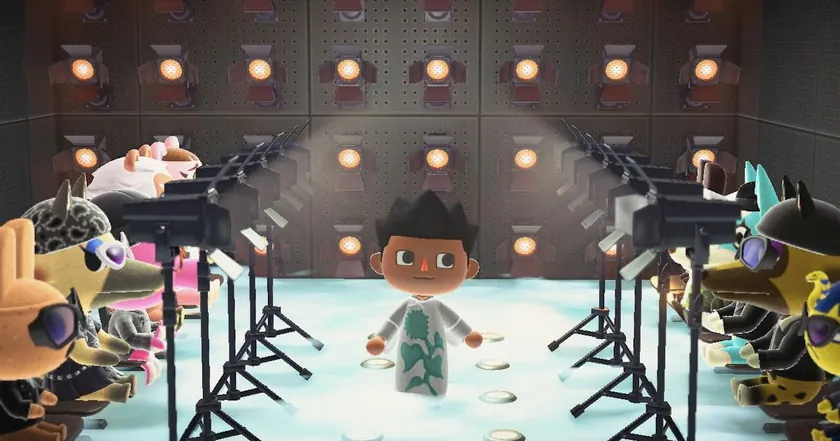
Animal Crossing × Valentino and Marc Jacobs / 2020 / Platform for audienceLockdown CoutureWith shops shut, fashion houses dressed people inside a game.Designer collaboration · Released 26Looks released by the two houses · legacy factValentino, Marc Jacobs and the Animal Crossing Fashion Archive, 2020
In spring 2020, lockdown closed shops and Animal Crossing: New Horizons became one of the games of the year. Players were designing their own clothes in the game.
Valentino and Marc Jacobs released in-game versions of their real collections, through a fan-run Instagram account. Players could download and wear them free.
In May 2020 Marc Jacobs released six looks and Valentino twenty, drawn from their spring and pre-fall collections. Other designers followed.
The most charming case here. Nobody paid, nobody sold anything, and it still felt like a turning point for fashion in games.
Image: Animal Crossing runway show (2020) · Reference Festival imagery via Nylon
The releases are documented. The designs were free, and neither house published any effect on sales or awareness.
When the usual channels close, go where people are spending time. A game can be a showroom.
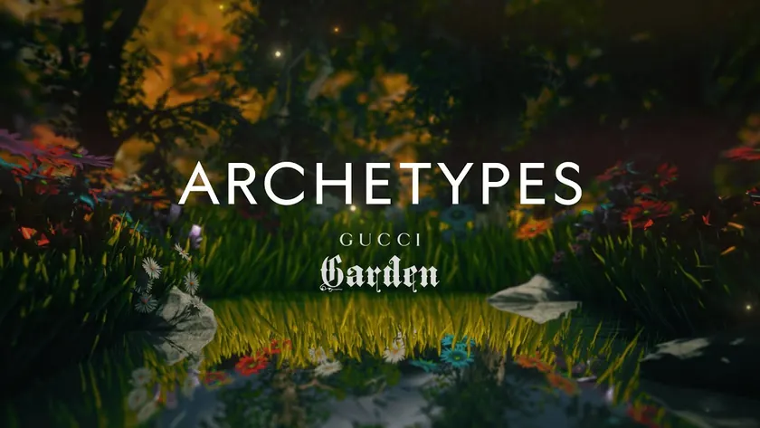
Gucci × Roblox / 2021 / Platform for audienceGucci GardenA virtual handbag resold for more than the real one.Platform integration · Launched $4,115Resale price of a virtual Gucci bag, as reported · legacy factGucci and Roblox, 2021
Gucci wanted to reach young people years before they could afford its products. Roblox had over 40 million daily users, many of them children and teenagers.
Gucci built a virtual exhibition inside Roblox and sold limited digital items. Roblox gave Gucci a young audience and a new kind of product.
In May 2021, during the two-week Gucci Garden event, a digital Dionysus bag that had sold for about $6 resold for 350,000 Robux, about $4,115, more than the real bag.
A child could own Gucci for the price of a sandwich. That might be the most important customer Gucci met all year.
Image: Gucci Garden Virtual Exhibition (2021) · Roblox film thumbnail
The resale price was widely reported but came from a single sale, and the bag’s value later dropped. Gucci published no revenue or brand figures.
Digital goods can carry real status. Scarcity works online as well as in a shop, if the brand means something.
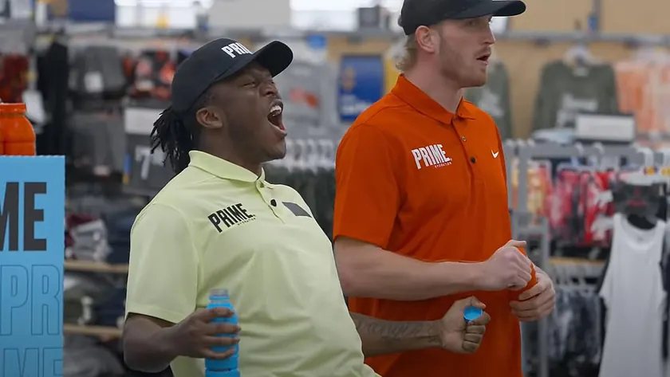
Prime × Logan Paul and KSI / 2022 / Talent for scalePrime HydrationTwo rival YouTubers launched a drink, and children queued outside shops for it.Co-branded product · Launched, boomed and fell −70%Fall in Prime’s UK revenue in a year, as reportedLogan Paul, KSI and Congo Brands, 2022
Logan Paul and KSI had fought each other in boxing matches watched by millions. With the drinks company Congo Brands, they launched a sports drink in 2022.
Paul and KSI promoted Prime to their audiences. Congo Brands made and distributed it.
Prime sold out across Britain and America, with bottles resold for many times their price. By 2024 sales were falling fast, and a bottler sued Prime, saying it cut ties when demand collapsed.
The most dramatic sales curve in the archive. Hype brought people in once, the drink had to bring them back, and it struggled.
Image: Prime launch promotion (2022) · Logan Paul video imagery via Dexerto
The rise and fall are documented, and the lawsuits put some figures on the record. The steepest claims about early sales came from the founders themselves.
An audience can launch a product. Keeping it on shelves takes a reason to buy again.
No partnerships match. Try clearing the search or setting a filter back to All.
05 / The evidence
An announcement shows a deal was signed. A launch shows it happened. Only a result shows what it achieved. Each case says which of the three the record supports.
A reported price is an input, not an outcome. Where a value appears, it is flagged separately and marked as confirmed, estimated or rumoured.
A partnership can work for one side and not the other. Each case lists what each partner brought, and the evidence says which side the outcome belongs to.
Many figures come from the partners themselves or from press estimates. The source for every outcome is named, so you can judge it.
Every case gets one of five ratings, strongest first: modelled effect, sales trend, survey, reach only and archival. Here a change in sales, downloads or revenue counts as a trend, and views or streams count as reach. A deal term, such as a stake, is marked so it isn’t read as a result.
Each partnership joined a brand to a creator, a streamer or a platform, and left a public record. Media credits identify campaign films, archived material and reporting.
06 / Out now / Edition 07